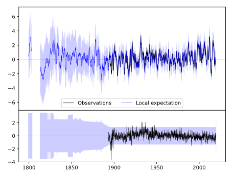
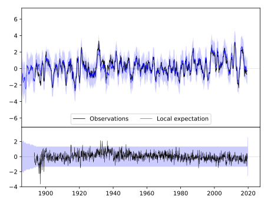
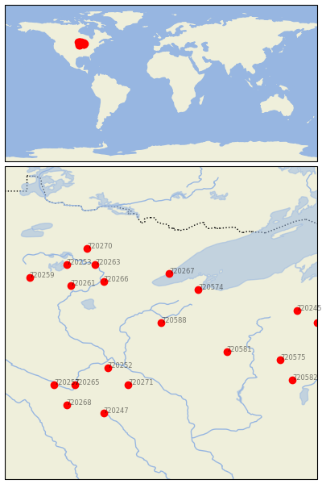

SPOONER AG RES STN [USA]


| Neighbour | Name | Country | Distance | Lon/Lat | Years |
|---|
| 720588 | SPOONER AG RES STN | USA | 0 | -91.9, 45.8 | 1893-2019 |
| 720574 | ASHLAND EXP FARM | USA | 112 | -91.0, 46.6 | 1894-2019 |
| 720267 | TWO HARBORS | USA | 134 | -91.7, 47.0 | 1893-2019 |
| 720581 | MEDFORD | USA | 147 | -90.3, 45.1 | 1890-2019 |
| 720266 | SANDY LAKE DAM LIBBY | USA | 154 | -93.3, 46.8 | 1892-2019 |
| 720252 | FARMINGTON 3 NW | USA | 159 | -93.2, 44.7 | 1888-2019 |
| 720271 | ZUMBROTA | USA | 178 | -92.7, 44.3 | 1891-2019 |
| 720261 | PINE RIVER DAM | USA | 196 | -94.1, 46.7 | 1887-2019 |
| 720263 | GRAND RPDS FOREST LA | USA | 198 | -93.5, 47.2 | 1893-2019 |
| 720265 | ST PETER | USA | 234 | -94.0, 44.3 | 1877-2019 |
| 720253 | LEECH LAKE | USA | 234 | -94.2, 47.2 | 1887-2019 |
| 720270 | MARCELL 5NE | USA | 242 | -93.7, 47.6 | 1893-2019 |
| 720575 | BOWLER | USA | 247 | -89.0, 44.9 | 1893-2019 |
| 720245 | STAMBAUGH 2SSE | USA | 257 | -88.6, 46.1 | 1893-2019 |
| 720257 | NEW ULM 2 SE | USA | 263 | -94.5, 44.3 | 1864-2019 |
| 720247 | ALBERT LEA 3 SE | USA | 268 | -93.3, 43.6 | 1885-2019 |
| 720259 | PARK RAPIDS 2 S | USA | 274 | -95.1, 46.9 | 1885-2019 |
| 720268 | WINNEBAGO | USA | 287 | -94.2, 43.8 | 1893-2019 |
| 720238 | IRON MT KINGSFORD WW | USA | 294 | -88.1, 45.8 | 1893-2019 |
| 720582 | NEW LONDON | USA | 295 | -88.7, 44.4 | 1856-2019 |